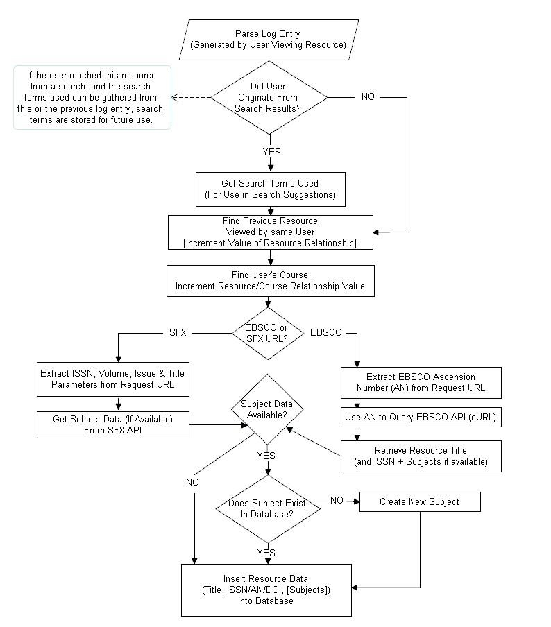

Recommendations Improve the Search Experience (RISE)
Within the RISE database personal data is stored and processed in the form of the Open
University Computer User account name (OUCU). The OUCU is generally a 5 or 6 character
alphanumeric construction (e.g. ab1234) that is used as the login for access to OU systems. This
OUCU is stored within the EZProxy log files that are ingested into the RISE database and is also
tracked by the RISE interface to allow searches to be related to users.
This OUCU is used within the RISE system for two purposes:
- To be able to make a connection between a search and a module of study associated with the searcher, to allow recommendations based on module; and,
- To be able to remove all searches for a particular user from the recommendations database at their request.
Processing takes place using a file of data from internal systems to add the module(s) being
studied by matching the OUCU in the RISE database with the OUCU stored by internal systems.
The data on which module is being studied is added into the RISE database. As each new OUCU
is added to the database a numerical userID is assigned. This is a simple incremental integer.
The RISE database stores details of which electronic resources are accessed by the user and the
search terms used to retrieve that resource (for searches carried out through the RISE interfaces)

Privacy approach
The RISE project has developed a separate Privacy policy to cover use of activity data as it was
felt that the standard OU Privacy policy was not sufficiently explicit regarding the use of data for
this purpose. The newly developed privacy policy is available at
http://library.open.ac.uk/rise/?page=privacy
One of the challenges with using EZProxy data is that the EZProxy log files contain records from
links in several different systems as we link as many systems as possible through EZProxy. So
this privacy policy has also been linked from the Library SFX and Ebsco Discovery Search
interfaces.
As well as explaining how their data will be used the policy provides a mechanism for users to ask
for their data to be removed from the system and for their data not to be recorded by the system.
This opt-out approach has been cleared by the Open University Data Protection team.
The EZProxy log files that are used within the system provide a particular challenge to an opt-in
approach. Access to this system is simply through expressing a URL with libezproxy.open.ac.uk
within the URL string e.g. http://portal.acm.org.libezproxy.open.ac.uk/dl.cfm
This URL then
redirects the user through the EZProxy system. These links can exist in many different systems.
Data on accesses to electronic resources is still required to be kept within log files to allow the
library to comply with licensing restrictions for the electronic resources to allow the library to track
any abuse of license conditions. An opt- out could only be applied to the usage data element of
the personal data.
Users do not login to the EZProxy system directly but are faced with a standard Open University
login screen to authenticate if they are not already recorded as being logged in.
Future privacy changes
An opt-in approach may be required to comply with the new EU directive on ‘cookies’.
Conceivably this may be achievable by redirecting all EZProxy links through an additional
authentication process and asking users to agree to storing their usage data. This acceptance
could be stored at the server- side although this introduces a further single-point of failure that
could block access to electronic resources. Alternatively a cookie approach could be taken along
with asking the user to accept the cookie.